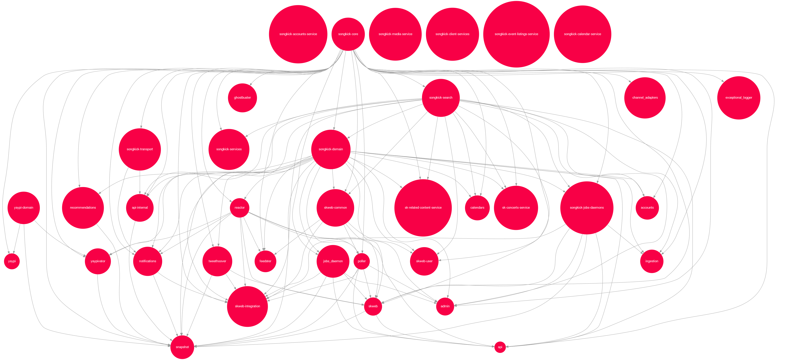

module Sinatra # Sinatra
module Helpers # Sinatra::Helpers
end
class Base # Sinatra::Base
include Helpers
end
class Application # Sinatra::Application
end
end| z, ? | toggle help (this) |
| space, → | next slide |
| shift-space, ← | previous slide |
| d | toggle debug mode |
| ## <ret> | go to slide # |
| c, t | table of contents (vi) |
| f | toggle footer |
| r | reload slides |
| n | toggle notes |
| p | run preshow |
| P | toggle pause |
app/
controllers/
models/
views/
features/
lib/
vendor/
api/
batch_processing/
daemons/
file_store/
notifications/
web_scrapers/
http://www.flickr.com/photos/freshwater2006/693945631/
app/
controllers/
models/ <----- business logic
views/
features/ --+
lib/ |--- support code
spec/ --+

module Sinatra # Sinatra
module Helpers # Sinatra::Helpers
end
class Base # Sinatra::Base
include Helpers
end
class Application # Sinatra::Application
end
end
class Array
def from(position) def to_sentence(options)
def to(position) def to_formatted_s(format)
def second def to_xml
def third def to_json
def forty_two def extract_options!
enddescribe My::Awesome::App do
it "uses a bunch of testing libraries" do
require "rspec"
require "cucumber"
require "fakeweb"
require "capybara"
require "activerecord-nulldb-adapter"
end
end$ curl http://service/concerts/123
{
"date": "20121008T19:30:00Z",
"links": {
"venue": "http://service/venues/456",
"performances": [
"http://service/performances/789",
"http://service/performances/123"
]
}
}
$ curl http://service/concerts/123
{
"date": "20121008T19:30:00Z",
"venue": {
"name": "Brixton Academy",
"city": {
"name": "London",
"country" {"name": "UK"}
}
},
"artists": [
{"name": "Radiohead", "billing": "headline"},
{"name": "Caribou", "billing": "support"}
]
}
Remember that the job of your model layer is not to represent objects but to answer questions. Provide an API that answers the questions your application has, as simply and efficiently as possible.
http://seldo.com/weblog/2011/08/11/orm_is_an_antipattern/
uri = URI.parse("http://accounts/users/#{name}")
http = Net::HTTP.new(uri.host, uri.port)
response = http.request_get(uri.path)
if response.code == '200'
JSON.parse(response.body)
else
raise NotFound
endhttp = Songkick::Transport::Curb.new('http://accounts')
http.get("/users/#{name}").datamodule Services
class AccountsClient
def initialize(http_client)
@http = http_client
end
def find_user(username)
data = @http.get("/users/#{username}").data
Models::User.new(data)
end
end
endmodule Models
class User
def initialize(data)
@data = data
end
def username
@data['username']
end
end
endbefore do
@http = mock('Transport')
@client = Services::AccountsClient.new(@http)
end
it "returns a User" do
data = {'username' => 'jcoglan'}
response = mock('Response', :data => data)
@http.stub(:get).with('/users/jcoglan').
and_return(response)
@client.find_user('jcoglan').username.
should == 'jcoglan'
endit "tells the service to delete a User" do
@http.should_receive(:delete).with('/users/jcoglan')
@client.delete_user('jcoglan')
endhttp.get('/', :foo => 'bar', :something => 'else')http.get('/?foo=bar&something=else')http = Songkick::Transport::Curb.new('...')
client = Services::AccountsClient.new(http)
user = client.find_user(params[:username])user = Services.accounts.find_user(params[:username])module Services
def self.accounts
@accounts ||= begin
endpoint = 'http://accounts-service'
http = Songkick::Transport::Curb.new(endpoint)
AccountsClient.new(http)
end
end
end